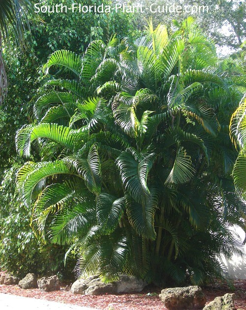
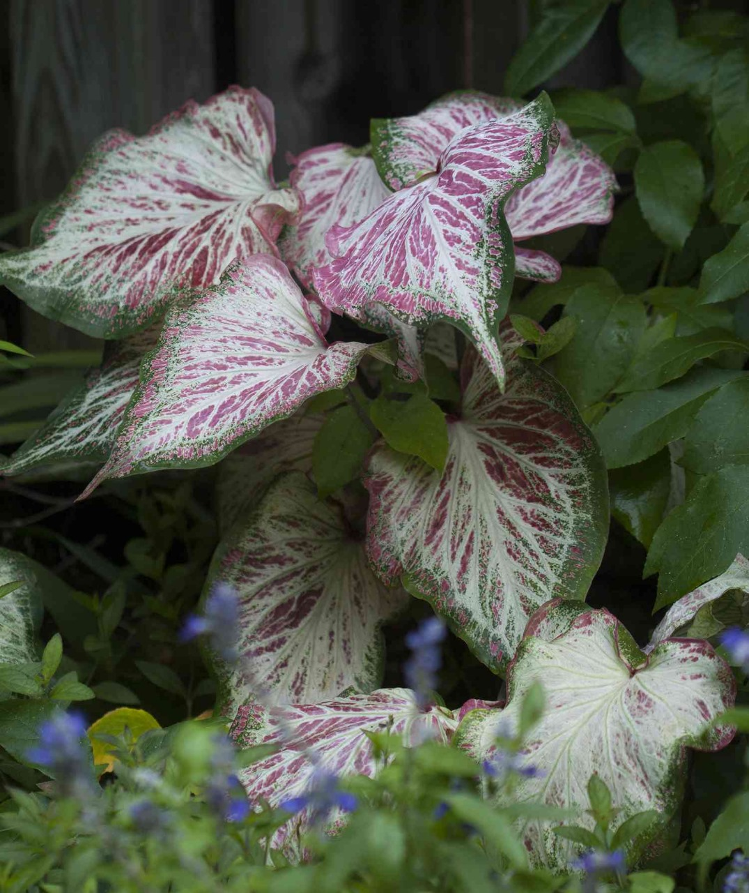

OutDoor Plants
-

Areca Plam
This non-toxic, toxin-filtering plant is perfect for Indian homes. The thin, bright green fronds make for a lush shrub, whereas its sturdiness ensures that it needs limited care and attention. Areca palms can grow upto 7ft in height indoors, and much more outdoors. Choose your pot size depending on how tall you want them to grow, and place it in a spot with indirect. Areca palms break down carbon monoxide and chemicals often found in paints and fuels, and can brighten up just about any corner in your home.
-
Rose plant
Description:The rose plant, belonging to the genus Rosa, is a perennial woody shrub known for its thorny stems and enchanting, aromatic flowers. With a wide array of colors and forms, roses are cherished for their aesthetic appeal and cultural significance. They can be found in both climbing and shrub varieties, showcasing compound leaves and a timeless beauty that has captivated gardeners and enthusiasts for centuries.
-

Caladium plant
Description:Caladiums are tropical plants known for their vibrant and colorful foliage. These ornamental plants are prized for their large, heart-shaped leaves that come in various shades of green, pink, red, and white. Caladiums thrive in warm and humid conditions, making them popular choices for gardens, indoor spaces, and shaded areas. They are typically grown from tubers and require well-draining soil. With their striking patterns and low-maintenance nature, caladiums add a splash of tropical beauty to any garden or interior space.